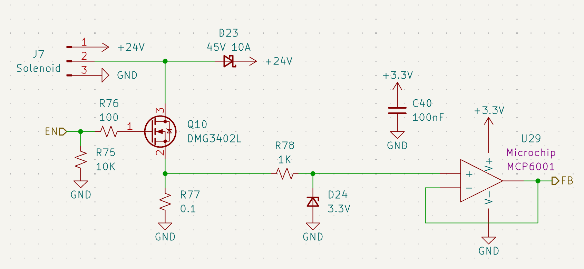
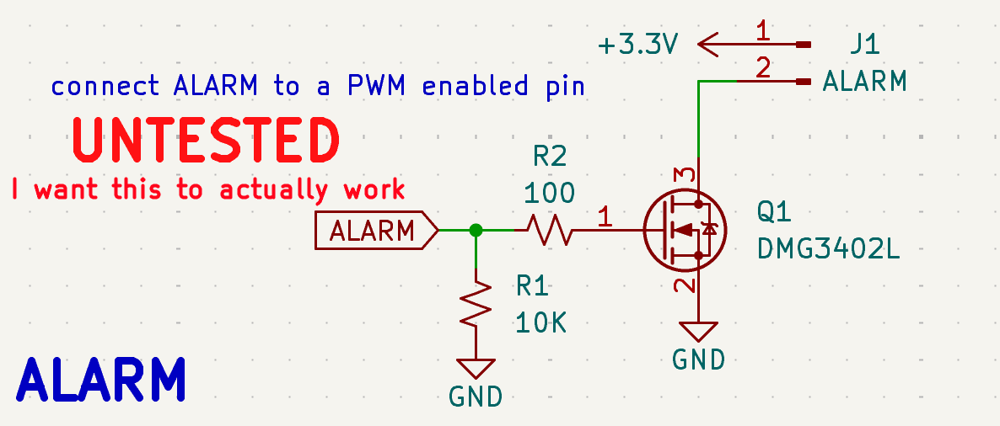

Actuators & Alarms
Solenoid Valve Drivers
The ECU features five independent high-side driver channels designed to actuate 24V propulsion solenoids (e.g., PeterPaul Series 20).

Figure 20: High-side NMOS driver with integrated current feedback.Driver Specifications
- MOSFET: DMG3402L (N-Channel).
- Flyback Protection: A 45V 10A Schottky diode (D23) clamps inductive kickback from the valve coils to prevent rail transients.
- Safety Logic: A 10kΩ pulldown resistor (R75) ensures the valve remains CLOSED if the MCU pin floats during boot or reset.
Current Feedback (Health Monitoring)
Unlike v1.0, this revision provides active feedback to confirm solenoid actuation.
- Shunt Resistor: A 0.1Ω precision resistor (R77) placed in the source path translates load current into a small voltage.
- Protection: A 3.3V Zener (D24) clamps the feedback signal to protect the MCU ADC.
- Active Buffer: An MCP6001 op-amp (U29) buffers the signal, allowing the firmware to distinguish between a healthy firing, an open-circuit (broken wire), or a short-circuit.
Emergency Alarm System
The alarm circuit is designed to provide audible status alerts at the launchpad. Note: This circuit is currently marked as UNTESTED in the hardware rev and requires PWM validation.

Figure 21: Piezo/Siren driver circuit for audible telemetry.Hardware Implementation
- Driver: Q1 (DMG3402L) switches the low side of the J1 alarm header.
- Power Source: Tied to the +3.3V logic rail.
- Pin Assignment: Connected to the ALARM net (PE9).
Firmware Requirements (For "Actually Working")
To achieve the desired audible tones, the following software parameters must be met: 1. PWM Frequency: Must be tuned to the resonant frequency of the connected piezo (typically 2kHz - 4kHz). 2. Duty Cycle: A 50% duty cycle is recommended for maximum volume. 3. Timer Config: Pin PE9 must be configured in Timer Alternate Function mode to allow hardware PWM generation without CPU overhead.
Integration Summary
| Channel | MCU Pin | Function | Notes |
|---|---|---|---|
| SOL0 | PE13 | Vent Valve | NO (Normally Open) |
| SOL1 | PE14 | Main Fuel | NC (Normally Closed) |
| SOL2 | PE15 | Main LOX | NC (Normally Closed) |
| ALARM | PE9 | Piezo Siren | PWM Configurable (0-255) |
Operational Safety: All propulsion solenoids are hardware-interlocked to the REDS Recovery System. In a total power loss scenario, the mechanical "Normal" state of the valve is the final fail-safe.